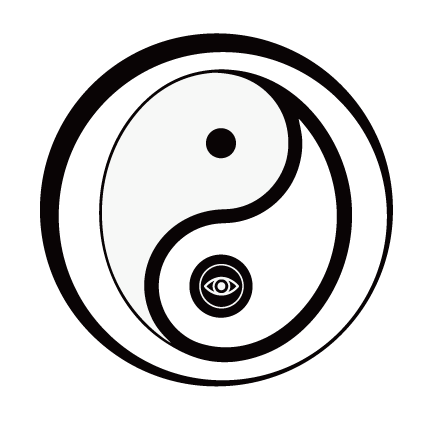

あなたの「見えない領域」に触れる。
占いではありません。
オーラが視える。過去が視える。
いま、あなたの周りに何があるかが視える。
暦（koyomi）は、幼少期から「視える」能力を持つ、
日本でも極めて希少な女性の陰陽師です。
占い師が「未来を読む」存在だとすれば——
結界を張る。不要な縁を切る。エネルギーを入れる。
ただ鑑定するだけでなく、
その場で状況を変える力がここにあります。
いま、あなたがどんな
エネルギーを纏っているか
表面的な悩みの奥にある、
本当の原因
あなたの背景に残る出来事や
人間関係の影響
「なぜかうまくいかない」「理由のない不調が続く」
──その答えが、霊視の中にあることがあります。
| 一般的な占い | 陰陽師霊視鑑定 | |
|---|---|---|
| できること | 視る・伝える | 視る＋施す＋防ぐ |
| アプローチ | 統計・象徴の解釈 | 直接の霊視・エネルギー操作 |
| 結界・お祓い | 不可 | 対応可能 |
| 縁切り・縁繋ぎ | 不可 | 対応可能 |
占い師は「見る」だけ。
暦は、見たうえで、動かします。
オーラ・過去・現状のリーディング
張る・切る——空間と人を守護する
パワーを入れ、本来の状態へ導く
恋愛・人間関係の縁を整える
エネルギー的な観点から身体に働きかける
※医療行為ではありません。医師の診断・治療に代わるものではありません。
追加は10分ごとに¥5,500。
必要な分だけ、必要な時間だけ。
| 10分 | ¥5,500 |
| 20分 | ¥11,000 |
| 30分 | ¥16,500 |
| 40分 | ¥22,000 |
タイマーで時間管理を徹底。予想外の請求はありません。
遠隔での霊視鑑定も可能です。ご本人様の写真をご用意ください。
初めて会った瞬間に、誰にも話していないことを言い当てられた。思わず涙が流れた。
── 40代男性 T.T
鑑定後、ずっと重かった身体が嘘みたいに軽くなった。あの感覚は今でも忘れられない。
── 30代女性 J.K
「すごい人がいる」と、
静かに広がっています。
宣伝はしていません。
ただ、一度鑑定を受けた方が、
大切な人にだけ紹介してくれる。
そうやって、暦（koyomi）のもとに集まる
人のご縁を大切に、
人生をよりよくするきっかけをあなたに。
まずは10分。
視えるものを、確かめてみてください。